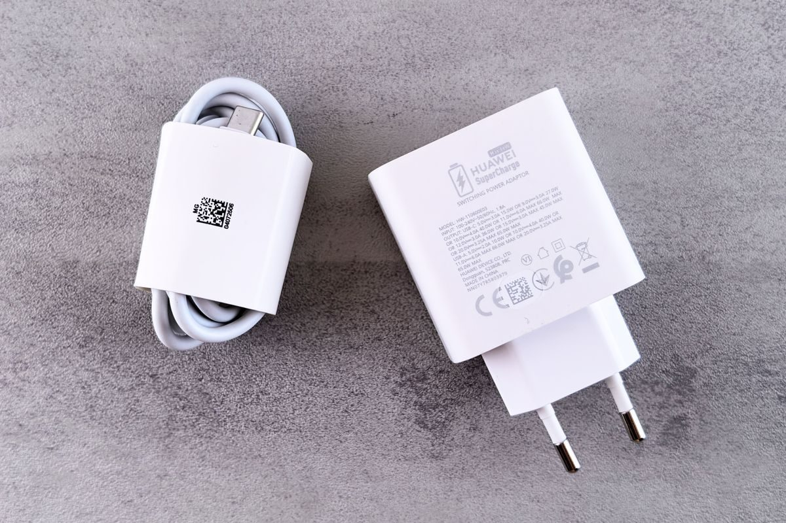

Es la categoría con más números inútiles por metro cuadrado. Un cargador anuncia 100 W, otro dice GaN, otro PD 3.0 y otro PPS, y la conclusión que saca todo el mundo es la equivocada: que más vatios cargan más rápido. No es así, y comprar de más aquí es tirar el dinero de la forma más tonta.
Un cargador de 100 W no mete 100 W en tu móvil. Los vatios del cargador son lo máximo que puede dar si alguien se lo pide. Quien decide cuánto entra es el aparato que cargas.
Si tu móvil acepta 27 W como máximo, con un cargador de 30 W va a su velocidad máxima. Con uno de 100 W va exactamente a la misma velocidad. Lo único que cambia es lo que pagaste y lo que abulta en la maleta.
Los vatios de más solo sirven para dos cosas, y las dos son legítimas:
GaN es nitruro de galio, el material del que están hechos los transistores por dentro, en lugar del silicio de siempre. Aguanta más temperatura y pierde menos energía en forma de calor.
Lo que eso significa en la práctica: el mismo número de vatios en la mitad de tamaño, y calentándose menos. Un cargador GaN de 65 W puede ser más pequeño que el ladrillo de 30 W que venía con el portátil de hace unos años.
GaN no carga más rápido. Solo hace que el cargador sea más pequeño y más frío. Que es una razón perfectamente buena para elegirlo, pero conviene saber qué estás comprando.
El cargador y el aparato tienen que negociar cuánta corriente pasa, y para eso hace falta que hablen el mismo protocolo.
USB-PD (Power Delivery) es el estándar universal por USB-C. Es el que quieres: lo usan iPhone, iPad, Android, portátiles, consolas portátiles y casi todo lo demás.
PPS es una extensión de PD que permite ajustar el voltaje en pasos muy finos. Los móviles Samsung y bastantes Android lo necesitan para dar su velocidad máxima. Si tienes un Samsung y tu cargador es PD pero no PPS, cargará bien, pero no a la velocidad que anuncia el móvil.
Y luego están los protocolos propios de cada marca —Quick Charge, SuperVOOC, y unos cuantos más—, que solo funcionan con cargadores de esa marca. No son mejores ni peores: son suyos.
Para que la carga rápida funcione tienen que coincidir tres cosas, y falla por la más floja:
Si compras un cargador de 100 W y lo enchufas con el cable que venía en una caja cualquiera, es fácil que estés cargando a 60. El cable no es un detalle.
| Lo que cargas | Con esto vas bien |
|---|---|
| Solo el móvil | 30 W, PD. Y PPS si es Samsung |
| Móvil y tablet | 45 W con dos puertos |
| Portátil ligero, o portátil y móvil | 65 W GaN. El punto dulce de la categoría |
| Portátil grande de trabajo | 100 W, y mira qué pide el tuyo |
El 65 W GaN de dos o tres puertos es lo que sirve para casi todo el mundo: carga el portátil, el móvil y los auriculares con un solo enchufe y cabe en un bolsillo. Pasar de ahí solo tiene sentido si sabes exactamente por qué.
Este es un aparato que se queda enchufado a la red toda la noche, muchas veces al lado de la cama. Es el peor sitio del catálogo para ahorrarse cuatro euros con una marca sin nombre. Busca marcado CE, marca reconocible y protecciones declaradas contra sobretensión y sobrecalentamiento.
Las guías donde esto decide: cargadores rápidos y baterías externas.
Y si lo que te pasa es que al conectar el hub tu portátil deja de cargar, eso tiene nombre y solución: hubs USB-C, y por qué el tuyo deja el portátil sin cargar.